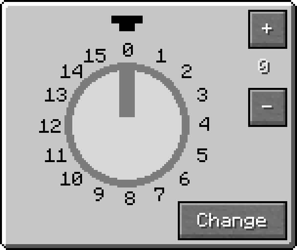

Overview
The Analog Source outputs a configurable Redstone signal at its output pins. Both the Redstone signal value and the output configuration can be set via its GUI Menu, which opens by right-clicking the block.
Crafting
| Ingredients | RedCu Crafter Recipe |
| 1 Smooth Stone Plate | |
| 1 Redstone Dust | |
| 1 Quartz |
The Analog Source Interface
In the GUI Menu:
- Press "+" or "-" to change the Redstone signal strength.
- Press "Change" to modify the output pin configuration.
The output pins are marked with Pin Mark A.
